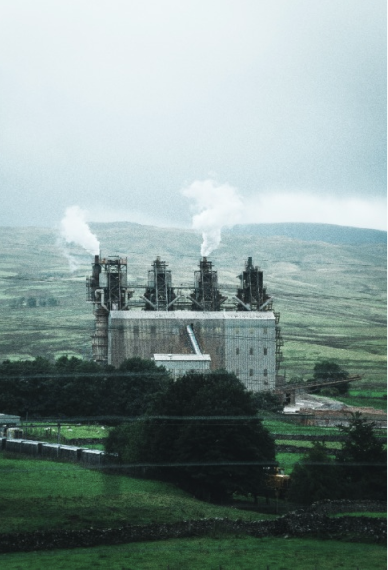

在全球氣候變遷與環境保護議題日益突顯的今天，企業永續發展已經成為全球經濟的關鍵話題。隨著社會對綠能新知的需求不斷增加，企業正積極尋找在永續發展領域的創新方向。其中，自然碳匯的概念正在成為企業實現永續發展的核心策略，為綠色能源和永續發展開創嶄新局面。自然碳匯是指自然生態系統中，像是森林、海洋等，將大氣中的二氧化碳轉化為有機物並吸收的過程。這種生態系統的功能對於減緩氣候變遷具有不可忽視的作用。
越來越多的企業開始將自然碳匯納入其永續發展戰略中，以應對氣候變遷和環境挑戰。透過技術手段，採取更環保的生產方式，減少二氧化碳排放。再者積極參與森林保護和植樹活動，通過植樹來達到吸收大氣中二氧化碳的目的。一些創新性的企業更是將自然碳匯作為商品來進行交易，形成一個碳市場。這種市場模式不僅能夠激勵企業更積極參與碳匯活動，還可以創造新的商業價值。此外，企業還通過改變供應鏈和產品設計，實現整個價值鏈的碳中和，推動自身的永續發展。達成社會責任的有力工具。自然碳匯的崛起不僅是企業永續發展的新趨勢，也帶來了一種全新的永續發展思維。企業不再僅僅把永續發展視為單純的環境保護，而是將其與商業運營緊密結合，實現經濟效益和環境效益的雙贏。這種新思維推動企業進一步優化生產流程，提高資源利用效率，同時投入更多資源用於研究開發綠色技術。政府的政策支持也在這一過程中發揮了積極的作用，為企業提供了更多的發展機會。透過永續發展的新思維，企業得以擁抱變革，迎接綠色未來。